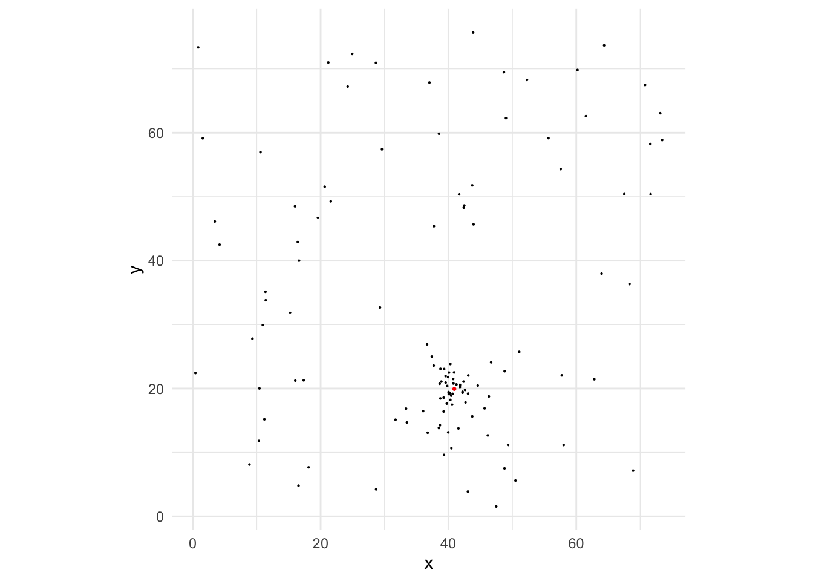
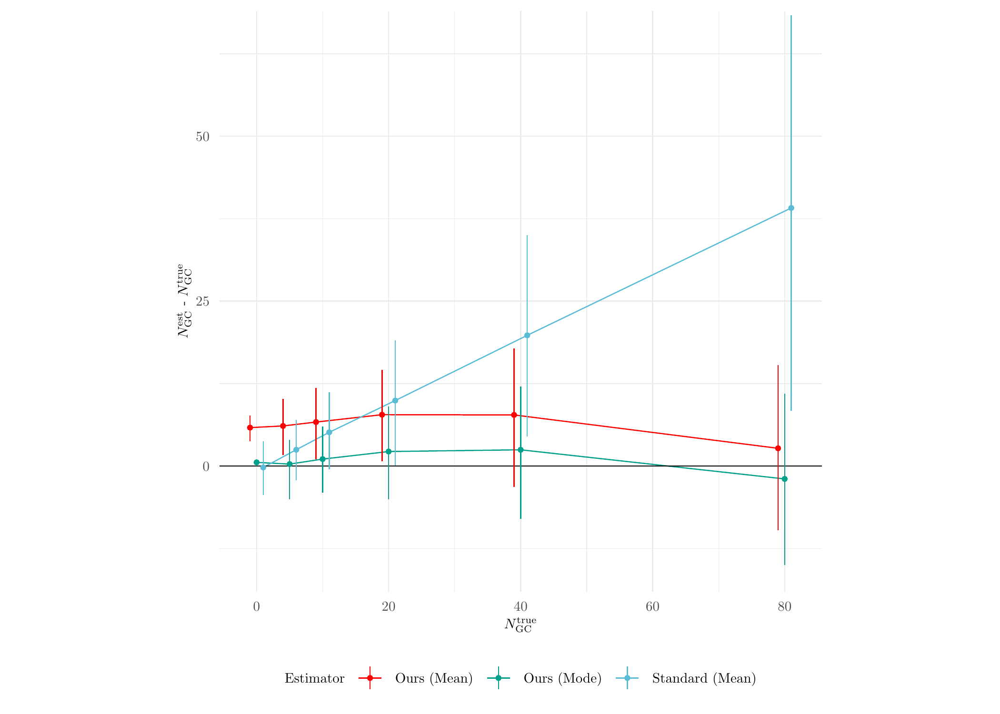
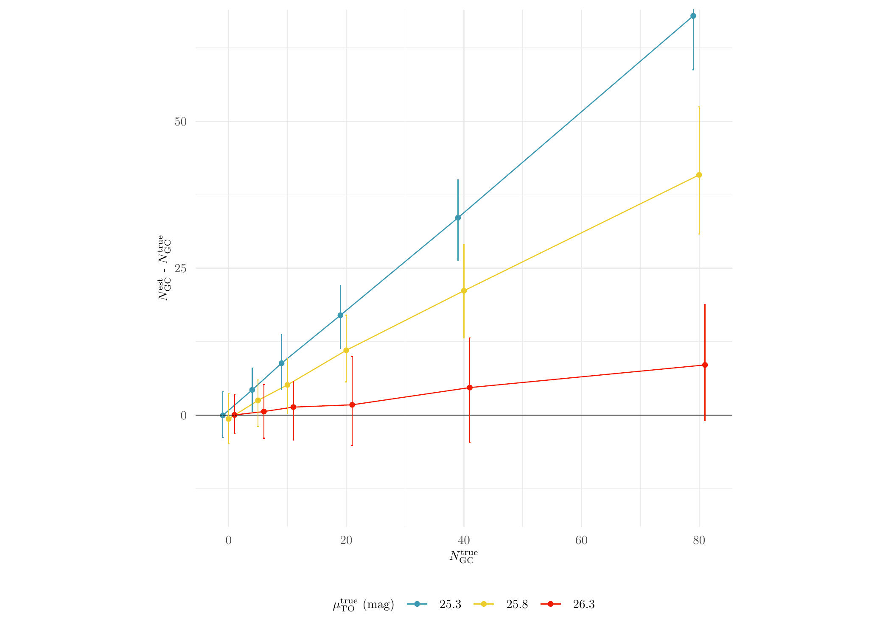
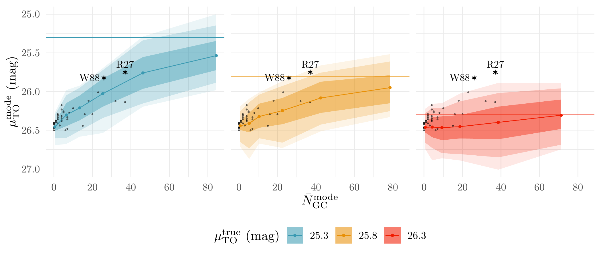

Last updated: 2024-07-07
Checks: 7 0
Knit directory: MATHPOP/
This reproducible R Markdown analysis was created with workflowr (version 1.7.1). The Checks tab describes the reproducibility checks that were applied when the results were created. The Past versions tab lists the development history.
Great! Since the R Markdown file has been committed to the Git repository, you know the exact version of the code that produced these results.
Great job! The global environment was empty. Objects defined in the global environment can affect the analysis in your R Markdown file in unknown ways. For reproduciblity it’s best to always run the code in an empty environment.
The command set.seed(20240702) was run prior to running
the code in the R Markdown file. Setting a seed ensures that any results
that rely on randomness, e.g. subsampling or permutations, are
reproducible.
Great job! Recording the operating system, R version, and package versions is critical for reproducibility.
Nice! There were no cached chunks for this analysis, so you can be confident that you successfully produced the results during this run.
Great job! Using relative paths to the files within your workflowr project makes it easier to run your code on other machines.
Great! You are using Git for version control. Tracking code development and connecting the code version to the results is critical for reproducibility.
The results in this page were generated with repository version 4ed641c. See the Past versions tab to see a history of the changes made to the R Markdown and HTML files.
Note that you need to be careful to ensure that all relevant files for
the analysis have been committed to Git prior to generating the results
(you can use wflow_publish or
wflow_git_commit). workflowr only checks the R Markdown
file, but you know if there are other scripts or data files that it
depends on. Below is the status of the Git repository when the results
were generated:
Ignored files:
Ignored: .DS_Store
Ignored: analysis/.DS_Store
Ignored: data/.DS_Store
Ignored: data/GC_prob/.DS_Store
Ignored: data/point_source_data/.DS_Store
Ignored: data/prob_GC_data/.DS_Store
Ignored: data/sim/.DS_Store
Ignored: data/v10acs/.DS_Store
Ignored: data/v10wfc3/.DS_Store
Ignored: data/v11acs/.DS_Store
Ignored: data/v11wfc3/.DS_Store
Ignored: data/v12acs/.DS_Store
Ignored: data/v12wfc3/.DS_Store
Ignored: data/v13acs/.DS_Store
Ignored: data/v13wfc3/.DS_Store
Ignored: data/v14acs/.DS_Store
Ignored: data/v14wfc3/.DS_Store
Ignored: data/v15acs/.DS_Store
Ignored: data/v15wfc3/.DS_Store
Ignored: data/v6acs/.DS_Store
Ignored: data/v6wfc3/.DS_Store
Ignored: data/v7acs/.DS_Store
Ignored: data/v8acs/.DS_Store
Ignored: data/v9acs/.DS_Store
Ignored: data/v9wfc3/.DS_Store
Untracked files:
Untracked: GCLF-tikzDictionary
Untracked: analysis/GCLF-tikzDictionary
Untracked: analysis/simulation-tikzDictionary
Untracked: data/summary_results.RDS
Untracked: simulation-tikzDictionary
Note that any generated files, e.g. HTML, png, CSS, etc., are not included in this status report because it is ok for generated content to have uncommitted changes.
These are the previous versions of the repository in which changes were
made to the R Markdown (analysis/simulation.Rmd) and HTML
(docs/simulation.html) files. If you’ve configured a remote
Git repository (see ?wflow_git_remote), click on the
hyperlinks in the table below to view the files as they were in that
past version.
| File | Version | Author | Date | Message |
|---|---|---|---|---|
| html | 4ed641c | david.li | 2024-07-07 | Build site. |
| Rmd | e5a8c27 | david.li | 2024-07-07 | wflow_publish("analysis/simulation.Rmd") |
This vignette contains code to run the simulation study conducted in the MATHPOP paper, as well as code to analyze the simulation results.
We first illustrate our approach for generating simulated data. First, load the required packages and help functions:
library(tidyverse)
library(posterior)
library(HDInterval)
library(modeest)
library(ggstar)
library(tikzDevice)
library(sf)
library(sp)
library(raster)
library(Rcpp)
library(RcppArmadillo)
library(spatstat)
library(VGAM)
library(reshape2)
library(wesanderson)
# load required functions
sourceCpp('code/cpp_help_func.cpp')
source('code/fit_mod_MCMC.R')Since we are running thousands of simulations with different
parameter configuration, we needed to run the R source file
on a remote HPC server operated under Unix. Thus, the original source
code for conducting the simulations was written to handle HPC server
file read-in. The two lines of code below are passed to the HPC server
to generate different simulations based on the sim_id
argument. If you only run the simulation a few times on a local machine,
you do not need this.
args <- commandArgs(TRUE)
sim_id <- as.numeric(Sys.getenv('SLURM_ARRAY_TASK_ID'))Next, construct the spatial domain in which the GC locations reside. Here we assume that the spatial domain is the same as the ACS images from the PIPER survey, i.e, a square with \(76\)~kpc a side:
# specify the simulation counter (this will be automatically read in on a HPC server; Setting sim_id to 900 here is only for demonstrative purposes)
sim_id <- 900
# vertices of the spatial domain
X <- c(0, 76, 76, 0)
Y <- c(0, 0, 76, 76)
# construct the spatial domain S
S <- Polygon(cbind(X,Y))
S <- SpatialPolygons(list(Polygons(list(S),'region')))
S <- SpatialPolygonsDataFrame(S, data.frame(id = S@polygons[[1]]@ID, row.names = S@polygons[[1]]@ID))We then specify the parameters used to simulate the GC data. We assume that there is one simulated UDG GC system present in the field, and is simulated using a Sersic profile. All other GCs are from the IGM, and simulated from a homogeneous Poisson process. For simulating the GCLF, the completeness fraction and measurement uncertainty are the same as that of PIPER ACS images obtained by DOLPHOT.
The only varying parameters are the GC counts of the UDG and its GCLF TO point. We have set these to \(N_{\text{GC}} = \{0, 5, 10, 20, 40, 80\}\) and \(\mu_{\text{TO}} = \{25.3, 25.8, 26.3\}\)~mag with \(26.3\)~mag being the canonical GCLF TO point. We simulate \(50\) datasets for each of the parameter configuration from above, which results in a total of \(6\times3\times150 = 2700\) sets of simulated data.
# 50% completeness limit
Lim <- 25.75
# simulation id: every parameter configuration is simulated 150 times to account for randomness
# NOTE: some HPC server does not allow this many different simulations to be done at the same time (many have a maximum 1000 files run at a time), so you will have to break these simulations into smaller chunks
par_id <- ceiling(sim_id/150)
iter <- (sim_id %% 150)*(sim_id %% 150 != 0) + 150*(sim_id %% 150 == 0)
# possible parameter configuration for GC counts (N) and GCLF TO (mu_U)
par <- expand.grid(N = c(0, 5, 10, 20, 40, 80),
mu_U = c(25.3, 25.8, 26.3))
# sim_id is set to 300, which corresponds to N = 80 and mu_U = 25.3 mag
# other model parameters
set.seed(sim_id)
b0 <- 0.037 # IGM GC intensity
c <- matrix(runif(2, 8, 68), ncol = 2) # location of the simulated UDG (within the box [8,68]X[8,68])
N <- par$N[par_id] # GC count in UDG
R_eff <- 2 # half-number radius
e <- 1 # aspect ratio of GC system
n <- 2 # Sersic index
theta <- 0 # orientation angle
mu <- c(26.3, par$mu_U[par_id]) # GCLF TO (IGM GC and UDG GC)
sigma <- c(1.2, 1) # GCLF dispersion
UDG_ID <- 'sim_U'We then simulate the observed GC point pattern and the magnitudes, and plot it. The red point and the cluster of GC at the lower-mid region is the simulated GC system.
# generate data with measurement uncertainty using the provided parameters. Note that the measurement uncertainty specification is set to the ACS images from DOLPHOT as default
Y <- simulate_Y_noisy(S, b0, c, N, R_eff, e, n, theta, mu, sigma)
# remove faint GCs according to the completeness fraction
Y_obs_n <- simulate_Yf_noise(Y, Lim)
ggplot(Y_obs_n, aes(x,y)) + geom_point(size = 0.1) + coord_fixed() +
theme_minimal() + geom_point(data = data.frame(x = c[,1], y = c[,2]), color = 'red', size = 0.5)
| Version | Author | Date |
|---|---|---|
| 4ed641c | david.li | 2024-07-07 |
After the data is simulated, it can now be passed to the
fit_MATHPOP function to conduct inference. See here on how to do this. Note that the data we
have simulated here does not consider the data uncertainty, i.e., every
source is a true GC without any contamination from other sources. In
such cases, set the argument prob_model = FALSE in the
fit_MATHPOP function to fit the model.
The prior distribution of the model parameters under simulations are as below (see here on how to construct the prior distribution parameter list):
prior <- list(IGM = list(b0 = c(log(0.03), 0.4), # IGM GC prior
mu = data.frame(a = 26.3, b = 0.5),
sigma = data.frame(a = log(1.3), b = 0.25)),
UDG = list(N = data.frame(a = rep(0, 1), b = rep(50, 1)), # UDG GC prior
R_eff = data.frame(a = log(2), b = 0.5),
n = data.frame(a = log(1), b = 0.75),
mu = data.frame(a = 26.3, b = 0.5),
sigma = data.frame(a = log(1.3), b = 0.25)))Now we conduct the analysis for simulation results obtained using
MATHPOP and compare them to those from the standard method. Note that
due to the large number of simulations conducted, the raw inference
results (MCMC samples for 2700 simulated data) are not uploaded to the
Github repo. We have summarized and stored these results in a much
smaller data object at data/sim/simulation_results.RDS that
is sufficient to draw conclusions presented in the MATHPOP paper. Read
in the summarized data of the simulation results:
sim_res <- readRDS('data/sim/simulation_results.RDS')We then conduct inference for the same simulation scenarios using the standard method (see J24 paper for a detailed description on how this is done):
# average 50% completeness limit under SExtractor quoted from J24
Lim <- 26.69
# parameter configuration
par <- expand.grid(N = c(0, 5, 10, 20, 40, 80),
mu_U = c(25.3, 25.8, 26.3))
# allocate object for inference results using the standard method
sim_res_std <- expand.grid(N = c(0, 5, 10, 20, 40, 80), mu = c(25.3, 25.8, 26.3)) %>%
slice(rep(1:n(), each = 150)) %>%
mutate(N_mean = 0)
# obtain GC counts estimates using the standard method
for (sim_id in 1:2700) {
# get simulation id
par_id <- ceiling(sim_id/150)
iter <- (sim_id %% 150)*(sim_id %% 150 != 0) + 150*(sim_id %% 150 == 0)
set.seed(sim_id)
b0 <- 0.037
c <- matrix(runif(2, 8, 68), ncol = 2)
N <- par$N[par_id]
R_eff <- 1
e <- 1
n <- 2
theta <- 0
mu <- c(26.3, par$mu_U[par_id])
sigma <- c(1.2, 1)
UDG_ID <- 'sim_U'
# simulate the GC data with measurement uncertainty in GC magnitudes using the measurement uncertainty specification from J24
Y <- simulate_Y_noisy(S, b0, c, N, R_eff, e, n, theta, mu, sigma, a = 0.07477, b = 0.75094)
# remove faint GCs according to completeness fraction
Yf_n <- simulate_Yf_noise(Y, Lim, alpha = 6.56)
# remove sources fainter than the canonical limit (as done in J24)
Y_obs_n <- filter(Yf_n, M < 26.3)
# count the number of sourcse within a 7.5 kpc radius aperture of the UDG
N <- nrow(filter(Y_obs_n, (x - c[1,1])^2 + (y - c[1,2])^2 < 7.5^2))
# estimate the background GC count
N_IGM <- nrow(filter(Y_obs_n, (x - c[1,1])^2 + (y - c[1,2])^2 > 7.5^2))/(76^2 - pi*7.5^2)*pi*7.5^2
# get GC count estimates by correcting for GCLF (divide by 0.5) and GCs outside of the counting radius (divide by 0.9)
sim_res_std$N_mean[sim_id] <- (N-N_IGM)/0.5/0.9
}
sim_res$Method <- 'Ours'
sim_res_std$Method <- 'Standard'Now we do some analysis with the inference results. First, we check the estimation performance on the GC counts (see Figure 7(a) in the paper for more details):
# grab the summary statistics of the GC count estimates from MATHPOP and the standard method
N_sim_res <- sim_res %>%
dplyr::select(N, mu, N_mean, N_mode, Method) %>%
bind_rows(., sim_res_std) %>%
melt(., id = c('N', 'mu', 'Method')) %>%
mutate(variable = ifelse(variable == 'N_mean', 'Mean', 'Mode'))
# process the data and plot it
N_sim_res %>%
group_by(N, Method, variable) %>%
mutate(N_avg = mean(value, na.rm = T),
N_l = quantile(value, 0.16, na.rm = T), N_u = quantile(value, 0.84, na.rm = T)) %>%
dplyr::select(N_avg, N_l, N_u) %>%
unique() %>%
drop_na() %>%
mutate(Estimator = paste0(Method, ' (', variable, ')')) %>%
ggplot(aes(N, N_avg - N)) + geom_line(aes(color = Estimator), position = position_dodge(3)) +
geom_hline(yintercept = 0) + theme_minimal() +
geom_pointrange(aes(x = N, ymin = N_l - N, ymax = N_u - N, color = Estimator),
size = 0.1, position = position_dodge(3)) +
scale_color_manual(values = wes_palette("Darjeeling1", 5, 'discrete')[c(1,2,5)]) +
xlab('$N_{\\mathrm{GC}}^{\\mathrm{true}}$') +
ylab('$N_{\\mathrm{GC}}^{\\mathrm{est}}$ - $N_{\\mathrm{GC}}^{\\mathrm{true}}$') +
coord_fixed(ylim = c(-15, 65)) + theme(legend.position = 'bottom',
legend.text=element_text(size=7),
legend.title = element_text(size = 7),
axis.title = element_text(size = 7),
axis.text = element_text(size = 7))
| Version | Author | Date |
|---|---|---|
| 4ed641c | david.li | 2024-07-07 |
Clearly, the standard method performs a lot worse than MATPOP. Next, we plot the performance results of the standard method against different true values of \(\mu_{\text{TO}}\):
sim_res_std %>%
group_by(N, mu) %>%
mutate(N_mode_avg = mean(N_mean),
N_mode_l = quantile(N_mean, 0.16), N_mode_u = quantile(N_mean, 0.84)) %>%
dplyr::select(N_mode_avg, N_mode_l, N_mode_u) %>%
unique() %>%
ggplot(aes(N, N_mode_avg - N, color = as.character(mu))) +
geom_line(aes(color = as.character(mu)), position = position_dodge(3)) +
geom_point(size = 1, position = position_dodge(width = 3)) +
geom_hline(yintercept = 0) + theme_minimal() +
geom_errorbar(aes(ymin = N_mode_l - N, ymax = N_mode_u - N), size = 0.5, width = 0.75, position = position_dodge(width = 3)) +
scale_color_manual(values = wes_palette('Zissou1', n = 5, type = 'discrete')[c(1,3,5)], name = '$\\mu_{\\mathrm{TO}}^{\\mathrm{true}}$ (mag)') +
xlab('$N_{\\mathrm{GC}}^{\\mathrm{true}}$') +
ylab('$N_{\\mathrm{GC}}^{\\mathrm{est}}$ - $N_{\\mathrm{GC}}^{\\mathrm{true}}$')+
coord_fixed(ylim = c(-15, 65))+ theme(legend.position = 'bottom',
legend.text=element_text(size=7),
legend.title = element_text(size = 7),
axis.title = element_text(size = 7),
axis.text = element_text(size = 7))
| Version | Author | Date |
|---|---|---|
| 4ed641c | david.li | 2024-07-07 |
We see that the standard method is only relatively accurate when the true \(\mu_{\text{TO}}\) is the canonical value since the standard method is assuming that the GCLF of GCs from all sub-population is the same as the canonical one.
Lastly, we plot the relationship between the posterior modes of \(N_{\text{GC}}\) and \(\mu_{\text{TO}}\) (see Figure 7(c) for more details):
summary_all_dat <- readRDS('data/summary_results.RDS')
sim_res %>%
group_by(N, mu) %>%
mutate(N_mode_avg = mean(N_mode), mu_mode_avg = mean(mu_mode),
N_mode_l = quantile(N_mode, 0.25), N_mode_u = quantile(N_mode, 0.75),
mu_mode_l_0.68 = quantile(mu_mode, 0.16), mu_mode_u_0.68 = quantile(mu_mode, 0.84),
mu_mode_l_0.95 = quantile(mu_mode, 0.025), mu_mode_u_0.95 = quantile(mu_mode, 0.975),
mu_mode_l_0.99 = quantile(mu_mode, 0.005), mu_mode_u_0.99 = quantile(mu_mode, 0.995)) %>%
dplyr::select(N_mode_avg, mu_mode_avg, N_mode_l, N_mode_u, mu_mode_l_0.68, mu_mode_u_0.68, mu_mode_l_0.95, mu_mode_u_0.95, mu_mode_l_0.99, mu_mode_u_0.99) %>%
unique() %>%
ggplot(aes(N_mode_avg, mu_mode_avg, color = as.factor(mu))) + theme_minimal() + facet_grid(~ mu) +
geom_ribbon(aes(ymin = mu_mode_l_0.68, ymax = mu_mode_u_0.68, fill = as.factor(mu)), color = NA, alpha = 0.4, size = 0.25) +
geom_ribbon(aes(ymin = mu_mode_l_0.95, ymax = mu_mode_u_0.95, fill = as.factor(mu)), color = NA, alpha = 0.2, size = 0.25) +
geom_ribbon(aes(ymin = mu_mode_l_0.99, ymax = mu_mode_u_0.99, fill = as.factor(mu)), color = NA, alpha = 0.1, size = 0.25) +
geom_point(data = summary_all_dat, aes(x = N_mode.x, y = mu_mode.x), size = 0.25, color = 'black', alpha = 0.5) +
geom_point(size = 0.75) + geom_line() + geom_hline(aes(yintercept = (mu), color = as.factor(mu))) +
scale_color_manual(values = wes_palette('Zissou1', n = 12, type = 'continuous')[c(1,9,12)], name = '$\\mu_{\\mathrm{TO}}^{{\\mathrm{true}}}$ (mag)') +
scale_fill_manual(values = wes_palette('Zissou1', n = 12, type = 'continuous')[c(1,9,12)], name = '$\\mu_{\\mathrm{TO}}^{{\\mathrm{true}}}$ (mag)') +
scale_y_reverse() +
xlab('$\\bar{N}_{\\mathrm{GC}}^{\\mathrm{mode}}$') +
ylab('$\\mu_{\\mathrm{TO}}^{\\mathrm{mode}}$ (mag)') +
geom_star(data = data.frame(N_mode_avg = 26, mu_mode_avg = 25.82434), fill = 'black', size = 1, starshape = 24, color = 'black') +
geom_star(data = data.frame(N_mode_avg = 37, mu_mode_avg = 25.75116), fill = 'black', size = 1, starshape = 24, color = 'black') +
annotate(geom = 'text', x = 18.5, y = 25.82, label = 'W88', size = 3) +
annotate(geom = 'text', x = 37, y = 25.65, label = 'R27', size = 3) +
theme(strip.text = element_blank(), legend.position = 'bottom')
| Version | Author | Date |
|---|---|---|
| 4ed641c | david.li | 2024-07-07 |
sessionInfo()R version 4.3.2 (2023-10-31)
Platform: aarch64-apple-darwin20 (64-bit)
Running under: macOS Sonoma 14.1.1
Matrix products: default
BLAS: /Library/Frameworks/R.framework/Versions/4.3-arm64/Resources/lib/libRblas.0.dylib
LAPACK: /Library/Frameworks/R.framework/Versions/4.3-arm64/Resources/lib/libRlapack.dylib; LAPACK version 3.11.0
locale:
[1] en_US.UTF-8/en_US.UTF-8/en_US.UTF-8/C/en_US.UTF-8/en_US.UTF-8
time zone: America/Toronto
tzcode source: internal
attached base packages:
[1] splines stats4 stats graphics grDevices utils datasets
[8] methods base
other attached packages:
[1] progress_1.2.2 wesanderson_0.3.7 reshape2_1.4.4
[4] VGAM_1.1-9 spatstat_3.0-7 spatstat.linnet_3.1-3
[7] spatstat.model_3.2-8 rpart_4.1.21 spatstat.explore_3.2-5
[10] nlme_3.1-163 spatstat.random_3.2-1 spatstat.geom_3.2-7
[13] spatstat.data_3.0-3 RcppArmadillo_0.12.6.6.0 Rcpp_1.0.11
[16] raster_3.6-26 sp_2.1-1 sf_1.0-14
[19] tikzDevice_0.12.5 ggstar_1.0.4 modeest_2.4.0
[22] HDInterval_0.2.4 posterior_1.5.0 lubridate_1.9.3
[25] forcats_1.0.0 stringr_1.5.1 dplyr_1.1.4
[28] purrr_1.0.2 readr_2.1.4 tidyr_1.3.0
[31] tibble_3.2.1 ggplot2_3.4.4 tidyverse_2.0.0
[34] workflowr_1.7.1
loaded via a namespace (and not attached):
[1] tensorA_0.36.2 rstudioapi_0.15.0 jsonlite_1.8.7
[4] magrittr_2.0.3 magick_2.8.3 spatstat.utils_3.0-4
[7] farver_2.1.1 rmarkdown_2.25 fs_1.6.3
[10] vctrs_0.6.5 askpass_1.2.0 terra_1.7-55
[13] tinytex_0.48 htmltools_0.5.8.1 distributional_0.3.2
[16] sass_0.4.7 KernSmooth_2.23-22 bslib_0.5.1
[19] pdftools_3.4.0 plyr_1.8.9 cachem_1.0.8
[22] whisker_0.4.1 lifecycle_1.0.4 pkgconfig_2.0.3
[25] Matrix_1.6-3 R6_2.5.1 fastmap_1.2.0
[28] clue_0.3-65 digest_0.6.36 colorspace_2.1-0
[31] spatial_7.3-17 ps_1.7.5 rprojroot_2.0.4
[34] tensor_1.5 labeling_0.4.3 fansi_1.0.6
[37] spatstat.sparse_3.0-3 timechange_0.2.0 httr_1.4.7
[40] polyclip_1.10-6 abind_1.4-5 mgcv_1.9-0
[43] compiler_4.3.2 proxy_0.4-27 withr_2.5.2
[46] backports_1.4.1 DBI_1.1.3 highr_0.10
[49] classInt_0.4-10 fBasics_4032.96 zipfR_0.6-70
[52] tools_4.3.2 units_0.8-4 filehash_2.4-5
[55] httpuv_1.6.12 goftest_1.2-3 glue_1.6.2
[58] stabledist_0.7-1 callr_3.7.3 promises_1.2.1
[61] grid_4.3.2 checkmate_2.3.1 getPass_0.2-4
[64] cluster_2.1.4 generics_0.1.3 gtable_0.3.4
[67] tzdb_0.4.0 class_7.3-22 hms_1.1.3
[70] utf8_1.2.4 rmutil_1.1.10 pillar_1.9.0
[73] later_1.3.1 lattice_0.22-5 klippy_0.0.0.9500
[76] deldir_1.0-9 tidyselect_1.2.0 knitr_1.45
[79] git2r_0.33.0 gridExtra_2.3 xfun_0.41
[82] timeDate_4022.108 stringi_1.8.4 qpdf_1.3.3
[85] yaml_2.3.7 evaluate_0.23 codetools_0.2-19
[88] timeSeries_4031.107 cli_3.6.1 munsell_0.5.0
[91] processx_3.8.2 jquerylib_0.1.4 stable_1.1.6
[94] parallel_4.3.2 assertthat_0.2.1 prettyunits_1.2.0
[97] scales_1.3.0 e1071_1.7-13 crayon_1.5.2
[100] statip_0.2.3 rlang_1.1.4